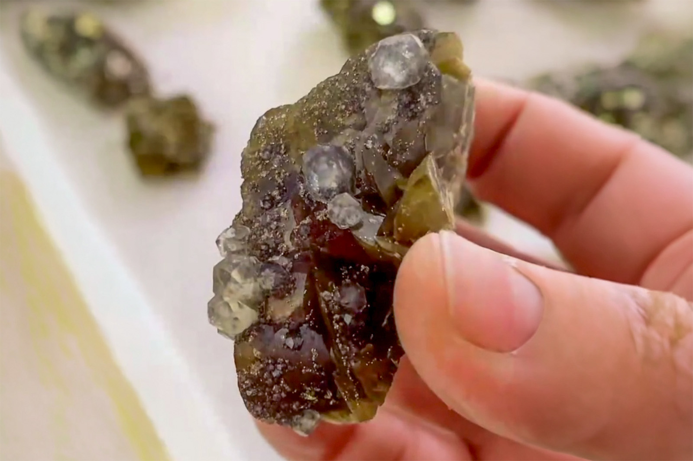

Siderite with Calcite and Minor Pyrite
"Siderite 2"
V-09688
Ebian ,Leshan city ,Sichuan province
Purchased 3/3/2026 from 7 Minerals Mine for $15.00
Core Collection • In Collection
Details
Storage Type: Flat
Storage Location: 000 Unassigned
Size class: Miniature (0)
Dimensions: 5.6 × 4.5 × 3.0 cm
Estimated Mass: 74.25 g
Luster: Above Average, Glassy